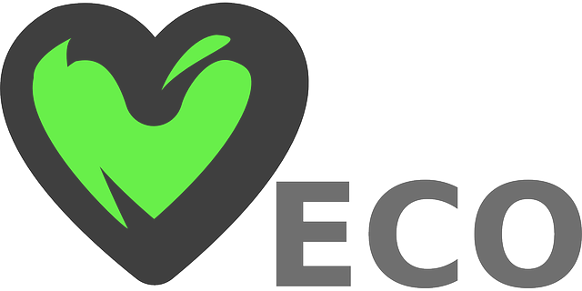
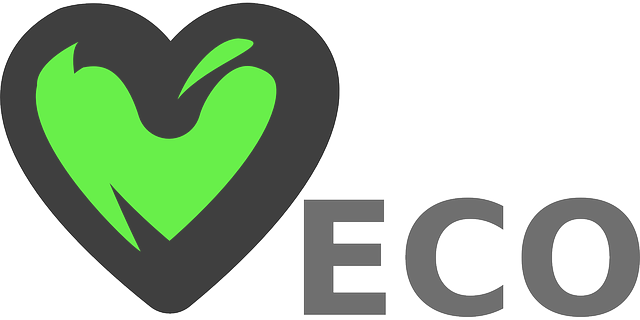

Eco-Friendly Centennial
THE MOTHER EARTH CELEBRATION
When we speak the charming phrase �Mother Earth� we are saying something of great significance. The Earth is indeed our mother. We are creatures born of the elements of which the Earth is composed, the same elements that make up plants, the other animals, the minerals, the natural chemicals and compounds of this heavenly body we know as our earth and our dear mother. The universe is a great thing, and we are just beginning to understand things about it. Scientists speculate that this universe started with a �big bang.� For we Easterners it was something like the �sound of One Hand clapping.� There were no creatures such as us to hear it...and the question is sometimes asked �if a tree falls in the forest, and there is no one to hear it, does it make a sound?� If the birthing of our universe was violent, is the preciousness and beauty of life any less for it? If life is brief is it any less meaningful or beautiful? If the self dies and becomes another part of nature should we be unhappy? We are all as God made us in that first �WORD.�
The destiny of the universe and all of it�s parts was determined to the end of time until the expanding universe recedes and collapses upon itself to generate the inconceivable power for creation for the next universe. Every new universe created has infinite possibilities for new forms of being. There are an infinite number of universes created. We certainly will reappear in different forms in this universe or the next. The Buddhist says �When you hear someone knocking, go to the door and greet yourself.� In the same way, when you see a cat or a dog or a tree or a flower, remember that you are greeting what you have been or what you will become. We are all one thing, just a different aspect of it. And, we are all bonded together on this spaceship Earth: if the plants die we die, if the animals die, we die. Our aboriginal brothers and sisters speak of �the One Tree.� Their vision is right, we are all living in one tree, our home in the forest of the universe. Our Mother Earth, in her infinite silent wisdom through the billions of years of expansion through time knows how to balance her children for their greatest good. Malthus said that a population will expand to the limits of it�s resources.
We see that in the Petrie dish with bacteria. The bacteria grows in the center of the gelatin and expands outward. The bacteria in the center die from the poisons excreted by the living processes of the bacteria. The bacteria near the fresh gelatin on the outer ring have resources and live until they have expanded their population to the limit and all of the bacteria on the dish die. Although we think we are more aware and more considerate of our circumstance than mere bacteria, the human population continues to expand. We create much refuse by our activities and the cities such as New York are running out of places to dump the garbage. Some of our rivers in the 1960�s could not support life. We have temporarily slowed the progress of the poisoning of our environment, but the population continues to grow and so does the refuse. As with bacteria, humans will find themselves held in check by disease or war as Mother Nature comes to make adjustments to bring things back to balance. We work upon ourown selves with the hand of nature when we make war! We reduce our populations to make room for those who survive. Most of us think that when we reach a crisis, unlike the bacteria we will �figure it out.� Perhaps we can, but we should start preparing as soon as we can. But one imagines that this takes a foresight few of us have right now, for we mostly only consider our immediate needs. Imagine this: a worldshattering asteroid is passing within 600,000 miles of the Earth right now. You may think that this is not very close, but it is, in fact, very close indeed. And there are many unseen and very large asteroids out there. It is very likely we will have an �event� in our future. Who knows when? And as individuals we will die, humanity may die. Eventually the universe will end anyway. But we will all live as part of this incredible universe and the next. That we existed once is a Truth, and what we were is Eternal and in the Mind of the God which creates all universes, an incomprehensible IDEA. Therefore, let us create our lives as works of great beauty since our lives are eternal. This beauty that we should seek is a harmony among things. I was pleased that people started to call our Center the WAH Center, because �Wah� in Japanese means �Harmony.�
In the Williamsburg Papers we are debating the issue of free will or determinism. Some of us claim that we have free will or choice in what we do, others say no, that there is a vast historical will which determines the destiny of all things. I would say that the Big Bang is a EX NIHILO declaration of a Will �TO BE!� (to exist to live) and that indeed all things were willed from that big bang. What choices do we really have when we are but limited by the materials of which we are made and the forces of the universe which determine how those materials will act and interact? Therefore our will is merely the will of our universe, the Historical Will. And yet. intelligent men think that they are freely creating their destinies on earth. They look at what nature has provided them and remake it by some vision they intuitively or consciously possess. They think their vision is theirs, but it is rooted in what Mother Earth has made them to be. Mankind is merely an extension of the Earth, the universe and her materials. When a man puts his hand to a task, it is Mother Earth who whispers in his ear to guide him and the One Hand that clapped that holds the trowel! And when great thoughts are thought, it is the will of �Word� the incredible �IDEA� that created the universe at the beginning. The universe creates itself anew every second. Creativity comes from the essential nature of the universe as infinitely variable. Yes, every day all things are different than they were before since this universe was born. As Heraclitus said, �One cannot step into the same river twice.� Man, in his youthful energy (Homo Habilis is only 30,000 years old) invented the wheel, the automobile, the airplane, and has split the atom. And he considers himself very �creative.� Our artists think of themselves as �Creative.� But has not nature already split the atom, have we not merely looked on nature and repeated what nature and the universe has done for billions of years and have we not done so as extensions of nature ourselves? As for the airplane and automobile, and the rocket ship, is this not Mother Earth inventing these things, are we not animals of the earth taking the unconscious thoughts of our Mother and applying them?
we are all a process of the Will(!) that created us in the first light that was energy becoming matter, the matter of which we are made. The universe can take hydrogen and build from it in it�s furnaces oxygen, carbon and the heavier elements. And yet we call these new elements part of nature. But when man, who is part of nature himself, pulls from his furnaces his products of plastic and steel and plutonium we call these �man-made.� Thus we separate �natural� and �man-made.� Language is an interesting thing that divides things that are really one. So here in Brooklyn there is much discussion in the Williamsburg Papers about language and meaning and how it relates to art. We know that we are always creating duality�s and oppositions with our thinking and language. As some of our writers have pointed out everything we think is in terms of duality: good/evil, love/hate, live/die, up/down, being/nothingness, light/dark. Everything we think or speak seems based upon duality and our reasoning is based upon a formula describing that duality: Aristotle�s principle of non-contradiction. The dialectic of reason is that ideas should oppose each other until the weak one dies away and the true idea prevails. But the �one or the other, but not both� ideas of our duality sometimes delude us. The dualism in the thinking of Xeno would make us believe that we cannot move from where we are standing to a point across the room, but we know that we can. And now that we have made a distinction between natural and man-made we are deceived into thinking that these things are fundamentally different when they are not. Plastic and steel are quite natural! Nature has made them just as nature through bees makes honey, or nature through birds builds nests from twigs...and do we not consider honey and bird�s nests natural? The duality of opposites in our
Tree or the Spaceship Earth a goodly shared environment. Western Man, one imagines, thinks of everything not human as dead material to be molded to his desire for his use. The American Indian and other cultures think of everything as conscious living things, even the rocks of the earth, and that if we do not respect their �spirits� they will turn on us in fury. These �primitives� say we should respect nature and take only what we need to live and return something for it�s use to honor the spirit of life itself. I very much like this philosophy, for at one time in this world we are �user� and next time we may be the �used.� May the user treat us with as good grace as we treat the used! We as a community should also give to our fellow beings as well as take. And we should not hurt others in doing it. Let us treat nature in the same way so that nature will always be able to share it�s bounty with us. Let us bless and revere our dear �Mother Earth!�
The MOTHER EARTH exhibit this year will display in the main gallery art made of products we consider �natural� such as wood, weaving from natural products such as s flax or wool, mineral, water, etc. But in the small gallery we will display what people consider �opposed to nature� or art from man-made material, such as nylon, rubber, plastic. The reason we are doing this is to clarify the misconception created by our placing ideas in opposition to each other through our dualistic or dialectic delusions. All things are extensions of nature, there is nothing that is �unnatural� in the strictest sense of things. Come wonder at the marvel of the fact that everything is one, Mother Earth encompasses all things, cradles all against her loving breast. Look at yourself and others, at the buildings, the bridges, the steel and concrete and the flowers: all from one thing, the energy or will that creates our material and spiritual world! Let us this Spring celebrate life... look around and greet yourself!

| Chandra K. Rai | Student No. 300890510 | © Copyright Chandra K. Rai - Web Interface Design - Fall 2016 |
|---|